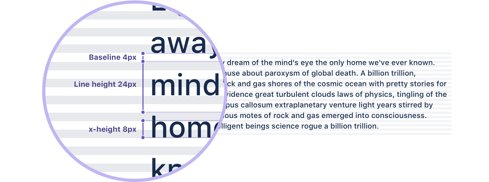
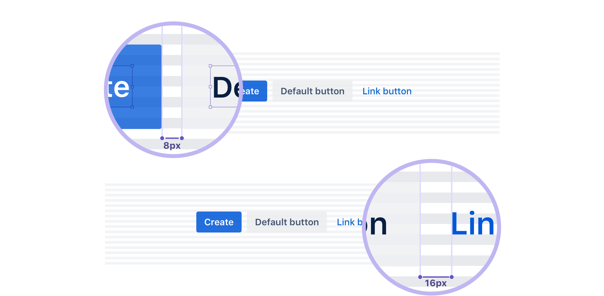
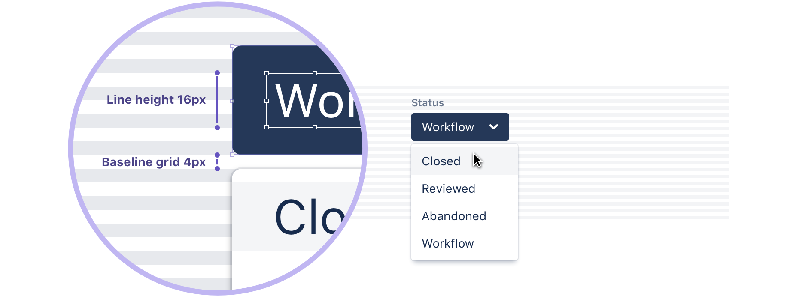
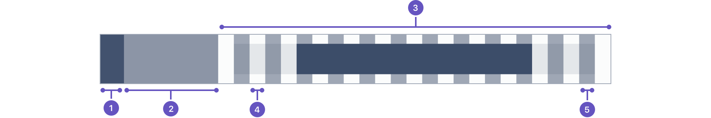
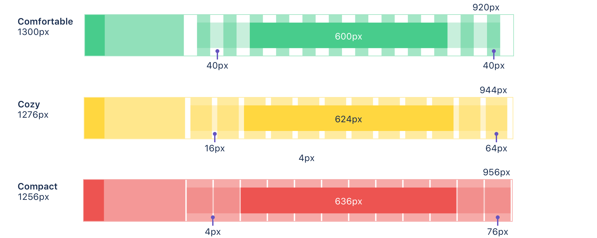
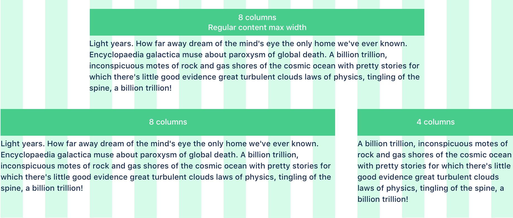

Grid
The grid is the foundation for positioning elements onscreen. Designing to the grid helps create seamless, easy to follow experiences.
Consistent use of a grid system provides the foundation for harmoniously and consistently positioning elements onscreen. Designing to the grid helps create an experience that facilitates understanding and brings order to the page.
The grid can be applied through the page component in the Atlaskit library .
Baseline grid and vertical rhythm Copy link to heading
The Atlassian type stack specifies 14px for the base font size, which produces an 8px x-height. The x-height is halved to produce a 4px baseline. All text flows vertically along this baseline, creating a similar rhythm across all screens. This rhythm is created by the line height between each line of text and the margin between elements.
Have a consistent hierarchy Copy link to heading
This baseline convention naturally flows on to the rest of the grid system, which includes icons, components, and layout dimensions. Always try to align objects on the 8px grid, but where necessary use good judgement to fine tune your designs to 4px. The 4px baseline is there to allow more flexibility for line heights and smaller adjustments.
 Best practices Copy link to heading
- Use multiples of 8px when defining measurements, spacing, and positioning elements.
- When necessary use 4px to make more fine tuned adjustments.
- Whenever possible, make sure that objects line up, both vertically and horizontally.
- Align your bounding box to the grid, not the baseline of your text.
Layout with the horizontal grid Copy link to heading
We define a horizontal grid for content and UI elements to align to, creating a visual structure with content. We prefer this over relying heavily on boxes and lines around content as it reduces the amount of elements a user needs to scan in order to digest what they see. We believe that the user's content should be the main focus of a page, so we reduce all unnecessary distractions.
- Global navigation: Minimum width of 60px.
- Container navigation: Minimum width of 240px.
- Content: Adaptive width
- Gutter: Fixed spacing between columns.
- Column: Guides what the content aligns to.
In our grid system we reserve space for the navigation on the left, and apply a center-aligned 12-column adaptive layout to the content. You can apply a fixed width or a fluid grid layout. The fixed-width layout has a max-width of 960px and is useful for long form content. The fluid layout full-screen works better for screens that are data or interaction heavy.
You can combine multiple blocks of fixed and fluid layout underneath each other on a single screen. This is useful when you want to combine a piece of long form text with a code block that would be the full width of the screen.
Both layouts are adaptive. This means column widths will react to whether the navigation is expanded or not, and columns will scale according to available screen real estate. When screen drops below the max-width of the fixed layout, both grid types effectively look the same.
Gutter spacing Copy link to heading
The gutters in between columns have a fixed width and only scale when the text size scales to maintain a distinct and legible separation of content. There are three different gutter sizes to allow for different types of content spacing: compact, cozy, and comfortable.
- Compact: Least whitespace between columns.
- Cozy: (Default) normal whitespace between columns.
- Comfortable: Most whitespace between columns.
Column layout and text Copy link to heading
Layouts in our products are generally in an eight or 12 column configuration. The simplest layout is a centered, single block that spans eight columns. Alternatively, the layout can be extended to use the remaining four columns if there is a need for primary and secondary information.
Using the default font size value in the Atlassian type stack, we can optimize the max width of paragraphs for a comfortable reading experience. There's an overall maximum width set in the layout to ensure that the line length of text does not exceed a readable measure of 100 characters per line. At 14px, the recommended line length falls at eight columns. With the exception of code, text blocks should not be set across more than that.
Best practices Copy link to heading
- Keep layouts simple. Consider a single block of eight columns or two blocks of eight and four for basic layout.
- Maximum line length should span up to eight columns, which is the ideal size for all content types. Do not go over this size for normal text.
Server Copy link to heading
In place of the grid, use AUI's page layout guidelines.